Answers 1, 3 and 4 are built (commit 4f36f7f). Answer 2, the seven other projects as new pieces on a different board, is designed here as three comps, and nothing of it is built. The positions on every board were checked in the site's own engine (src/lib/chess/engine.ts).
Only for Work to a project. The bishop stays where it is; the plinth and the light change in one frame, when the seam lands. Every other pair still lifts what is left. Frames at 0 to 3.6 s, FaultLine.
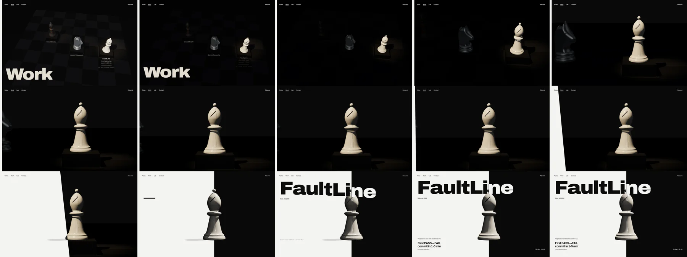
0.00, 0.15, 0.30 … 3.60 sA new section before the links, captioned. Tall screens sit side by side, wide ones take the full width. The heading "The product" is new copy (question 6).
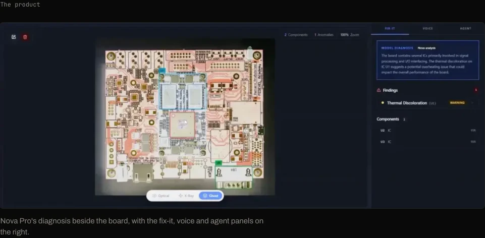
CircuitMindAI, 1440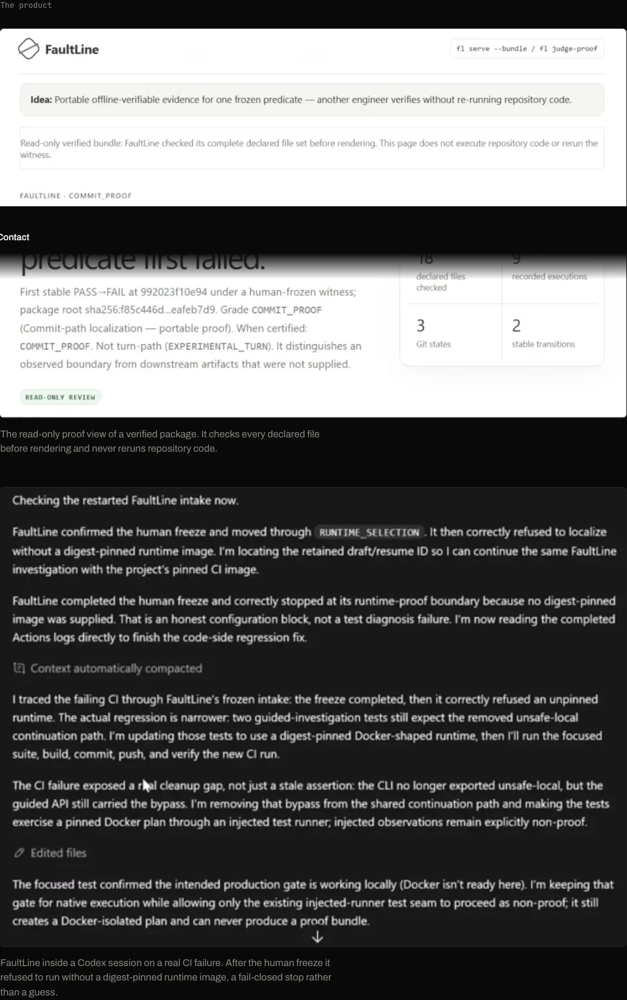
FaultLine, 1440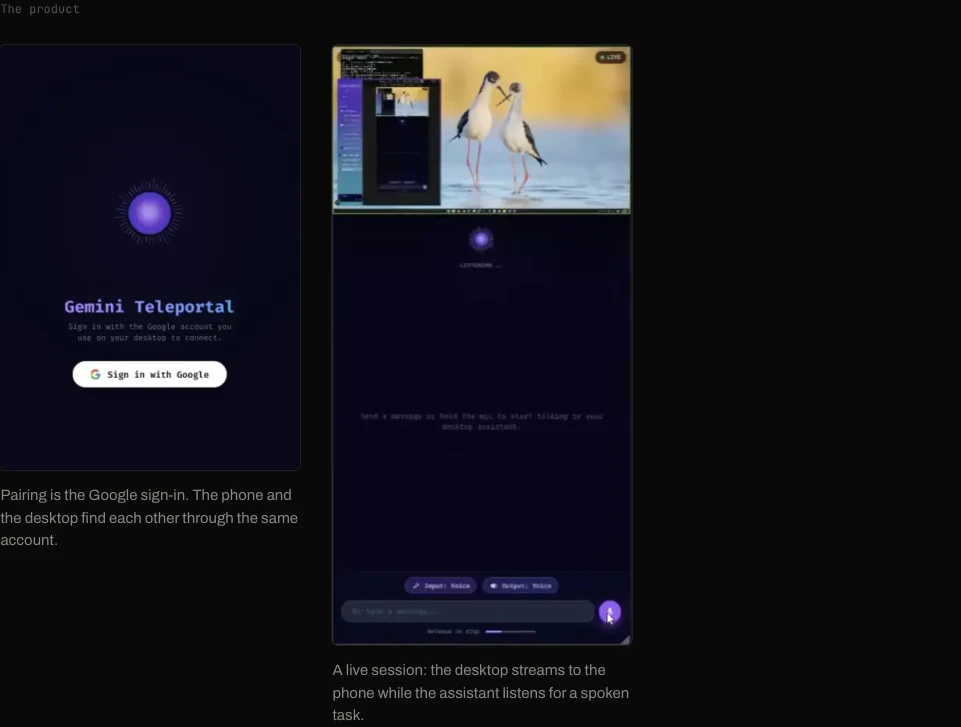
Teleportal, 1440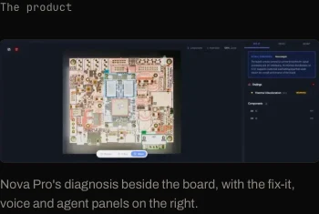
390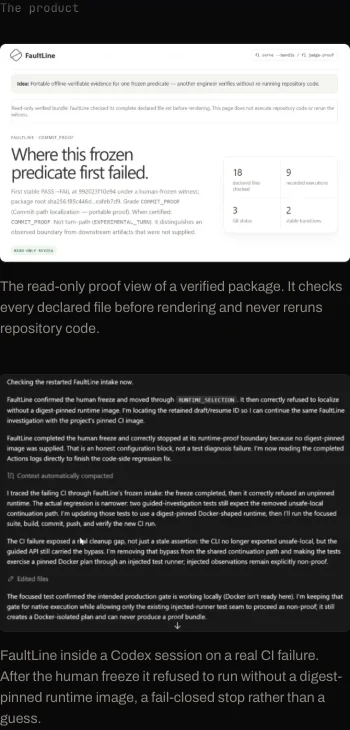
390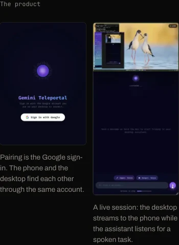
390The FaultLine and Teleportal drafts are gone from the pages and from content/voice.md. CircuitMindAI's decision now reads "Vision on the board and voice for the operator; results are cached locally …". Its annotation, in your words, is the only one left (question 5).
Each piece is its project's move in the career game, and each material argues for the project, without reusing the featured three's porcelain, aluminium, basalt or copper.
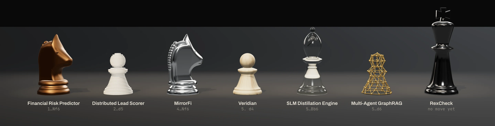
| 1…Nf6 | Financial Risk Predictor: a cast bronze knight. Alekhine's Defence, another game, so it stands off the board. |
| 2…d5 | Distributed Lead Scorer: an ivory pawn cut into thirty slices, each carrying its share. The Elephant Gambit. |
| 4…Nf6 | MirrorFi: a mirror-polished knight; it shows the room back to itself (question 7). |
| 5. d4 | Veridian: a pawn in pale ash. Measured emissions, grown material. |
| 5…Bb6 | SLM Distillation Engine: a glass bishop with a small ivory bishop inside it, 70B around 3B. |
| 5…d6 | Multi-Agent GraphRAG: a pawn drawn as a graph, brass edges between nodes on its surface. The "?" move. |
| none | RexCheck: an obsidian king. It has no move yet, and "rex" is the king (question 8). |
A walnut board after 5. d4, with every sideline's move laid on it at once, highlighted as it would be in an analysis program. The scoresheet on the left is the list; hovering a row lifts its piece. The two with no place on this board, Alekhine's Defence and RexCheck, stand aside behind rank 8. The seam sits at the far left edge, as on Work.
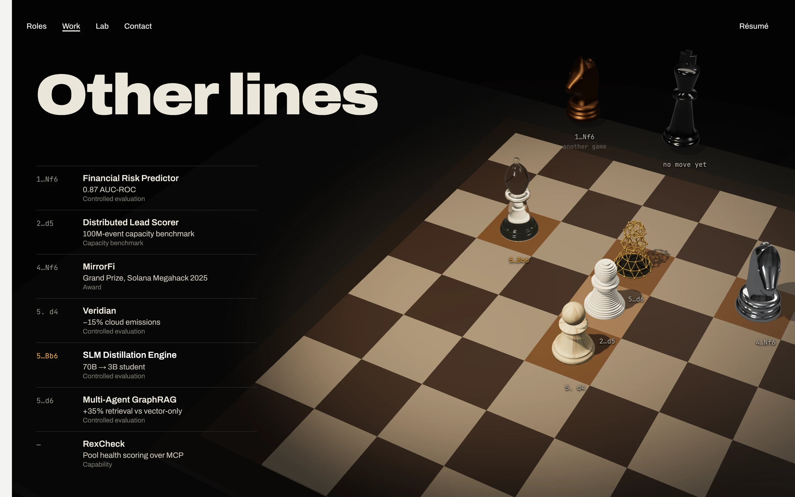
1440×900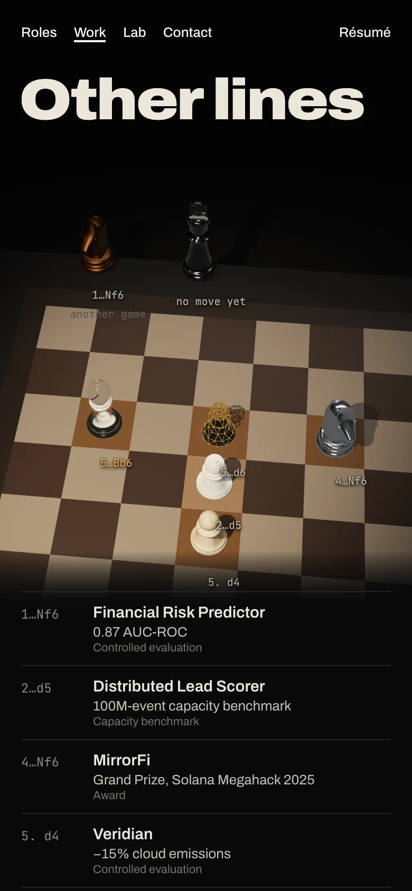
390×844Each project gets its own board, in its own position, lit where its piece stands; the rest of each set is plain and dark. Scrolling walks the camera along the table and each board's card comes up as it reaches the front. On the phone the table runs away from you and the nearest board is captioned.
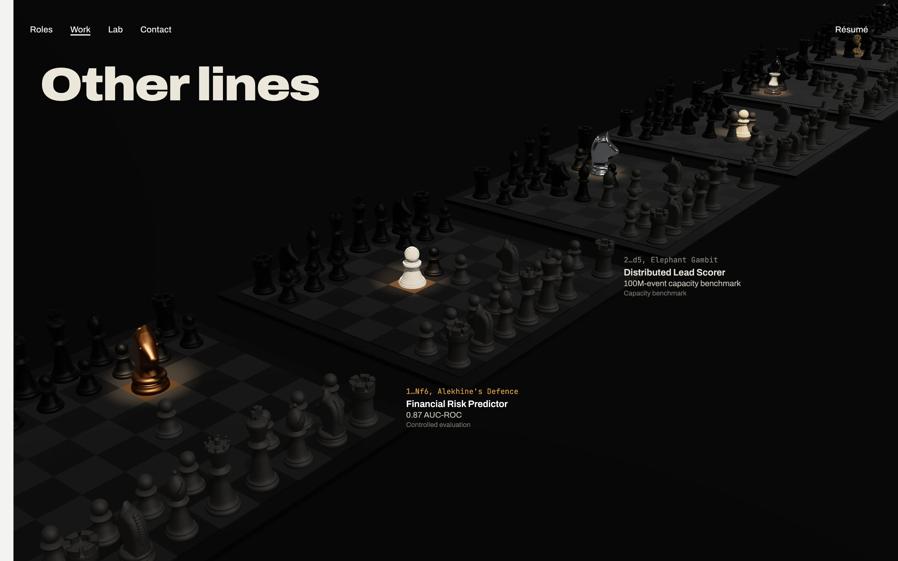
1440×900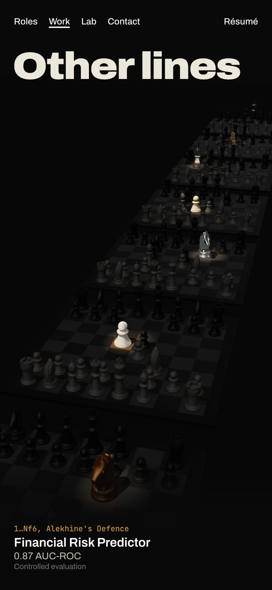
390×844Comp A's layout, on the paper side: the board is a printed diagram (hatched dark squares, coordinates, ink arrows for each move) with only the seven pieces standing on it. The row being read turns its arrow amber. The paper floods, as on Roles: this is the day side of the same idea.
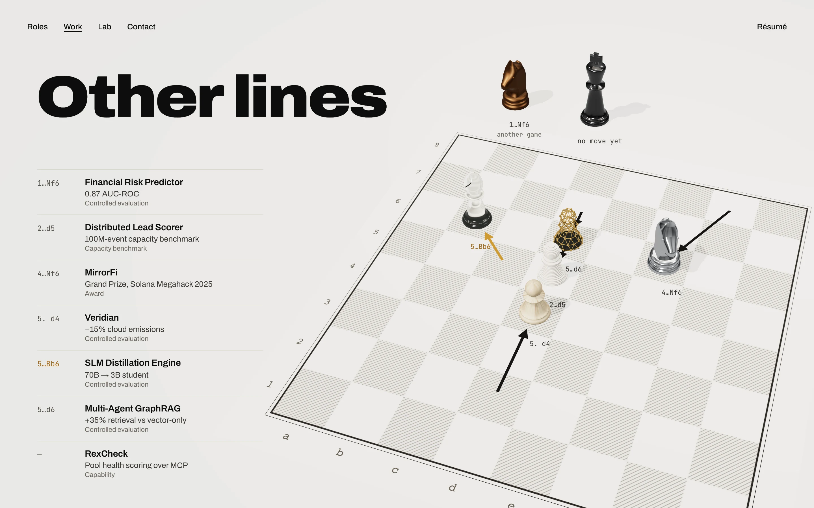
1440×900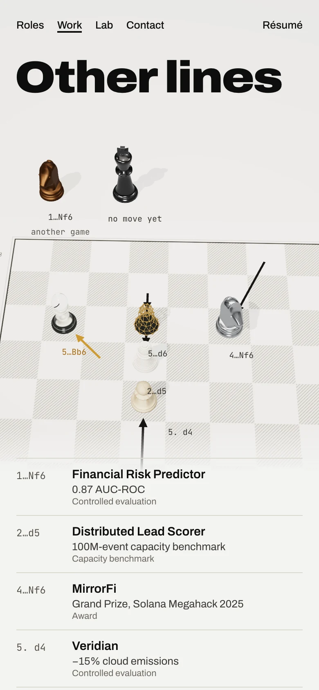
390×844/archive redirect already points to /work#archive), or a second room of its own?